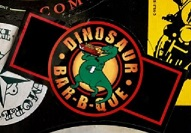
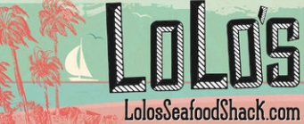
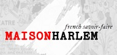
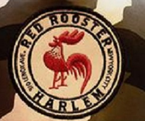
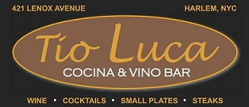
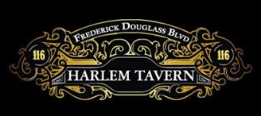
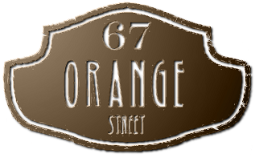
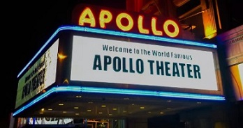
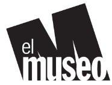
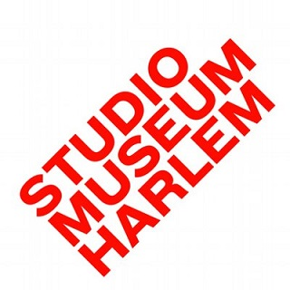

| Dinosaur BBQ | Scrumptious eats for the carnivore in you. #1 train takes you within blocks. Bring extra wet wipes. |  |
| Lolo's Seafood Shack | This tiny spot packs a whopper of a meal. Perfectly prepared seafood, presented in a bag with your choice mouthwatering sauces. Like spicy? They've got it. Appetizers can serve as meals. |  |
| Sexy Taco, Dirty Cash | Gourmet tacos of every type. Vegan, meat lovers, seafood. Great atmosphere. Great location. Outdoor seating. A bit cramped inside. Super music. Open Mic. | |
| Maison Harlem | Oui Oui. You don't have to go to France to enjoy the finest French cuisine. Try their MERGUEZ DE BARBES, spicey homemade lamb sausage. Or indulge in truffle mac & cheese. Weekend brunch enjoyed in a relaxing atmosphere with superb service. |  |
| Red Rooster | This hotspot right off 125th Street is live every night. Co-creator Marcus Samuelsson can often be seen mingling with guests. Red Rooster's bar is upfront, so you know they have The. Best. Drinks. Oh, they also serve fantastic food! |  |
| Tio's Bistro | A bit removed from the hubbub of the 125th Street corrider, Tio's is a great after work spot. Intimate. Happy hour. Generous bartender. |  |
| Harlem Tavern | Located on Harlem's "restaurant Row", this corner establishment boasts a huge outdoor space. A live DJ, multiple gigantic screens, Harlem Tavern is a fun night spot. |  |
| 67 Orange Street | Vintage style speakeasy for group parties or an intimate date night. |  |
| Apollo Theater | The must-see attraction in Central Harlem. Some of the biggest names in entertainment got their start right here on the stage of the world-famous Apollo Theater. You can be a part of an up-and-comer's start as an audience member at Amateur Night. You'll also find great educational programs, comedy, dance, and everything in between! |  |
| El Museo del Barrio | El Museu del Barrio features a rich collection of Latino, Caribbean, and Latin American culture. Enjoy featured films, visual and performing arts in a welcoming space. El Museo, founded by artist and educator Raphael Montañez Ortiz and a coalition of Puerto Rican community members, boasts more than 6500 objects that span more than 800 years of Latino culture. |  |
| The Studio Museum in Harlem | The Studio Museum is celebrating its 50th anniversary. Here you'll find ideas and arts featuring artists of African descent. |  |
| Schomburg Center for Research in Black Culture | This famous research library is named to honor historian and activist Arturo Alfonso Schomburg. At the Schomburg you'll find exhibits, shows, entertainment, speakers, and even a themed Friday night social with dj. |